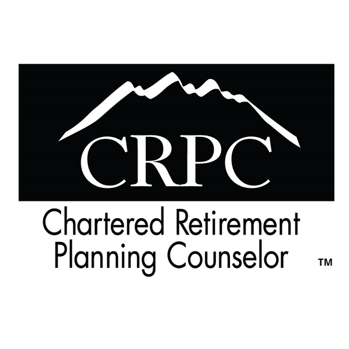

Scott Marcoe helps people find clarity and confidence during major life and career transitions — job loss, career change, divorce, early retirement, and inheritance.

Scott Marcoe is a financial planner and CRPC™ professional who helps people find clarity and direction during major life and career transitions. As the founder of Checkpoint Planning and creator of The Checkpoint Strategy, he brings structure and calm to moments that often feel chaotic.
Scott's approach to planning is shaped by his background as a competitive endurance athlete. He is a State Champion mountain bike racer and a National Champion in 24-hour mountain bike racing. The long training hours, constantly changing terrain, and mental discipline required for endurance success influenced the philosophy behind The Checkpoint Strategy. Training to win meant having a clear goal, breaking the work into smaller checkpoints, and adjusting to real conditions along the way. Financial transitions follow the same pattern — progress happens through checkpoints, pacing, and smart decisions made under real circumstances.
Scott's planning process breaks big financial questions into clear, manageable steps so clients can stabilize quickly, build confidence, and move forward at a pace that feels right. His work is grounded in empathy, experience, and the belief that clarity creates confidence.
"One checkpoint at a time." That is the philosophy Scott learned from endurance racing, and the foundation of how he helps people navigate financial transitions.
Scott lives in Orange County, California and supports clients across the United States.

Chartered Retirement Planning Counselor, College for Financial Planning.
Registered through Ameritas Investment Company, LLC, Member FINRA/SIPC.
Licensed Life and Health Agent. Insurance License #0E59309.
Board Member, AISS (Achievement Institute for STEM Scholars) — Chairman, Marketing Committee.
Every client works directly with Scott. When your situation calls for specialized expertise, this is the extended team of professionals he works with on your behalf.
Reviews client trusts and provides estate planning guidance when your plan involves legacy, gifting, or asset protection decisions.
Experienced in complex financial planning scenarios, wealth management strategies, and solutions that go beyond standard planning.
Advises business owners on succession planning, exit strategy, and the financial decisions that come with selling or transitioning a business.
Internal wholesaler specializing in life insurance solutions, coverage analysis, and protection strategies tailored to your transition needs.
Tax planning specialist who coordinates on income strategy, estimated payments, Roth conversions, and filing implications across your financial plan.
The best next step is a conversation. The Where We Begin session is complimentary, carries no obligation, and takes 45 minutes.
Schedule Your Free Session